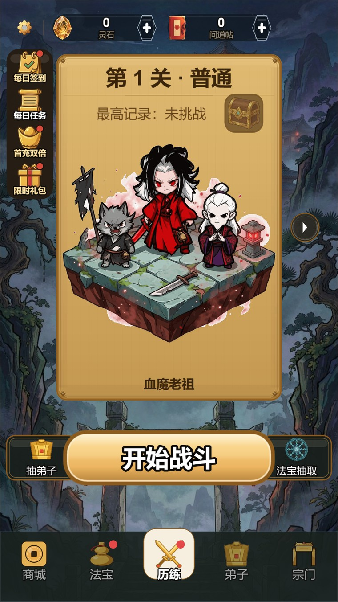
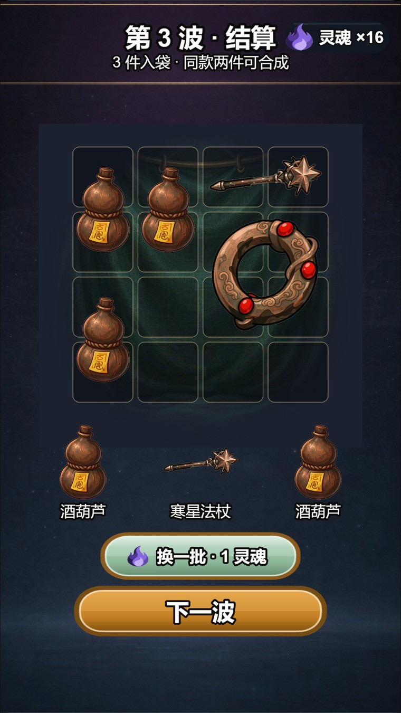
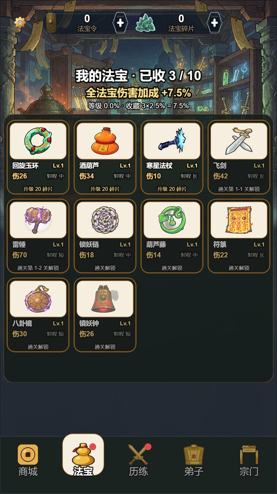
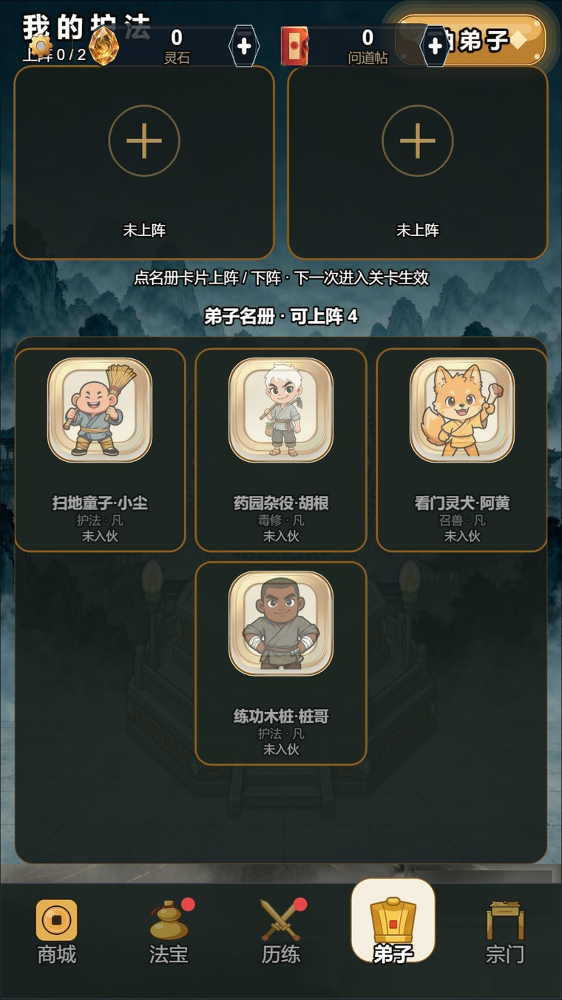
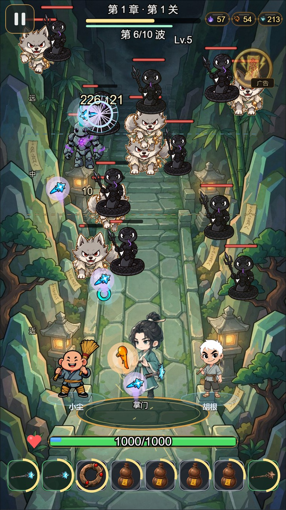
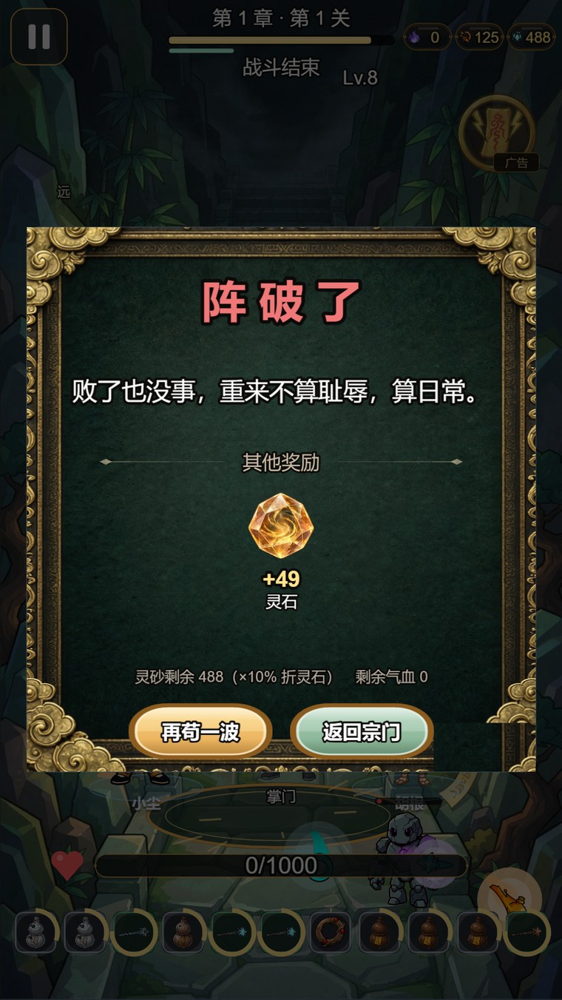

独立开发 · 挂机修仙 · 竖屏手游
摆阵修仙
玩家不操心打怪，操心的是「这几格先塞谁」。
这游戏到底在玩什么
竖屏挂机塔防。战斗是自动的，法宝进了背包就自动上阵、自动索敌、自动开火——玩家要做的决定其实只有一个：每波结束后从三件候选里挑一件，放进阵盘。
阵盘开局是 3×3 九格，每清一波加 2 格，到第 9 波才长满 27 格。前期每一步都在挤：手上想要的东西永远比格子多，先放谁、把谁挪开，都得自己掂量。
法宝的射程是法宝自己的属性——雷锤、八卦镜、镇妖钟是短射程，得等怪贴脸进圈才开火；飞剑、符箓是长射程，站在阵盘后排也能打到山道深处；剩下五件都是中程。摆在哪一格并不改变射程，这一点我在新手引导里就直说了，省得玩家花十分钟挪来挪去求证。
一局打完 10 波进结算，局内灵魂清零，回主城用灵石和碎片做永久养成。所以一局是「这一把怎么活过去」，主城是「长期怎么变强」，两条线不混。

一局的完整节奏
选关 → 开局页（把法宝拖进阵盘、挑弟子）→ 进战斗 → 怪按波次表一波波出 → 波间入袋 + 三选一 → 第 10 波打完结算。中间没有加载、没有过场，从点「开战」到第一只怪出手不到 1 秒。
波间那三件候选是免费看的，想换一批要花灵魂，而且两个维度一起涨：同一波里第 1/2/3 次要 1、2、3 点，过了第 4 波变成 2、3、5，第 7 波之后是 3、5、8。一开始我打算做固定价，后来发现固定价会让玩家无脑刷到满意为止——改成递增之后，刷第二次得先掂量：「这几波还撑不撑得住」。

法宝系统：背包就是阵盘
这里我犯过一个方向性的错。参考别的游戏时，我看到人家有「上阵 8 格 + 手动上下阵」，就照着设计了「法宝上阵名单」这个界面。后来想明白：我这游戏背包上限 27 格，上阵位置也是 27 个，两个数字本来就是同一个。既然每件都会上阵，那「名单」根本不存在，手动配装纯属给玩家找事。
现在改成：放进背包 = 自动上阵。系统内部按「伤害 × 形态」排个序，取前 27 件投影到战场。玩家做的事回到纯粹的「往哪一格塞什么」，而不是在两层界面之间来回切。
- 五档稀有度：白、绿、蓝、紫、橙。颜色只出现在战斗 HUD、图鉴和结算三处，储物袋里一律不上色，免得满屏发光。
- 十种法宝分三档射程：短程雷锤、八卦镜、镇妖钟；中程回旋玉环、酒葫芦、寒星法杖、锁妖链、葫芦藤；长程飞剑、符箓。射程写在法宝身上，不写在格子上。
- 合成靠拖拽：同族同形态的两件靠近时出现连线，松手就合成升形态，最高五形态。储物袋只用绿、红两色提示能不能放，但合成连线照样显示，线是关系，格色是判定，两件事分开画。
- 弹幕按族分派：飞剑是一道剑光、玉环自转、葫芦溅射、雷锤眩晕，爆点快慢从 0.14 秒排到 0.45 秒。辨识度靠节奏差，不靠改形状——形状一改，玩家就得重新学一遍。


数值：三条曲线互相咬
这套数值里最难的从来不是「调大一点」，而是别让某一条曲线自己跑飞。修炼速率、灵气产出、阵法收益三条线互相喂：阵法收益一高，灵气产出翻倍，修炼速率跟着暴涨，一局就变成躺着过。
所以我给自己立了条硬线：任何「无条件、全阵、全程」的加成，等效倍率不能超过 1.6。条件型必须标折算——门槛按 1/3 覆盖率算，精英按血量占比算，形态按受益阵位除以 9 算。改数值前先跑一遍沙盘脚本，超线就回退，不靠手感。
形态成长单独算：基础系数 2.10，形态 V 的伤害是形态 I 的 19.4 倍。这个倍率不是拍脑袋定的，是把「五形态 × 十法宝 × 三射程」的组合代进去，保证最强组合和最弱组合的差距落在可接受区间里。
局内还有一层：每清一波突破一级，从三条词条里挑一条带走，面板一打开整局暂停。词条做的是「这一把偏成什么样」——堆弹幕、堆血量、还是堆灵魂掉落，决定同一套法宝在这局里能滚多远。

踩过的坑，都是真踩的
- 结算面板固定高度：最早是「先定面板高、再算内容偏移」，结果奖励少的那局，面板下半截空出 356 像素，占整屏 46%。改成内容驱动——每段自己声明高度，累加出总高，不够最小高度时把差额均摊进段间距。
- 敌人序列帧差 1 像素就抖：四帧画布尺寸不统一，怪跑起来像在呼吸，忽大忽小。最后定死入库铁律：统一画布、逐帧按内容高精确归一、顶距固定、水平居中。判据取资源的 trim 高，抠图只允许四边泛洪。
- 射程外计时器：怪走出射程后如果计时器继续归零，重新进射程的瞬间会连发暴射。现在把计时夹在下限上，出圈就停成「待机」，回来也不会透支。
- 新手指引永远不弹：加载函数写了，但全仓没有一处调用它。零报错、零日志，气泡就是不出来。这种错最阴，只能靠「跑一遍全新存档」才发现。
做出来的规模
十种法宝（各五形态）、七种敌人（各四帧序列帧）、Boss 单人血量 72350、四个独立货币（灵石 / 法宝令 / 问道帖 / 法宝碎片）、五页主城功能、商店六档（60 到 6480 钻）。
四个货币的边界是死规定：升级绝不扣灵石，抽奖绝不产碎片；抽到重复法宝退法宝令，重复弟子转信物。一开始图省事让升级也吃灵石，结果玩家永远攒不下钱，抽奖成了摆设。
玩法规则、数值表、界面布局、战斗表现、美术入库、测试脚本，全部一个人从零做到能发布。这句话写出来挺轻，做的时候是几个月。
